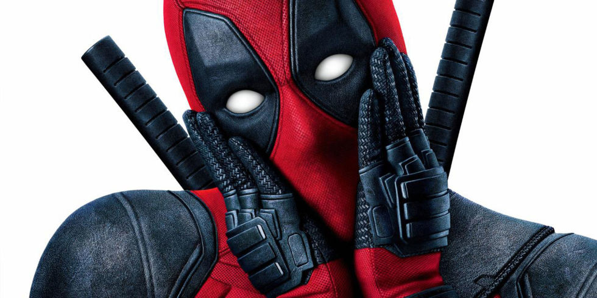
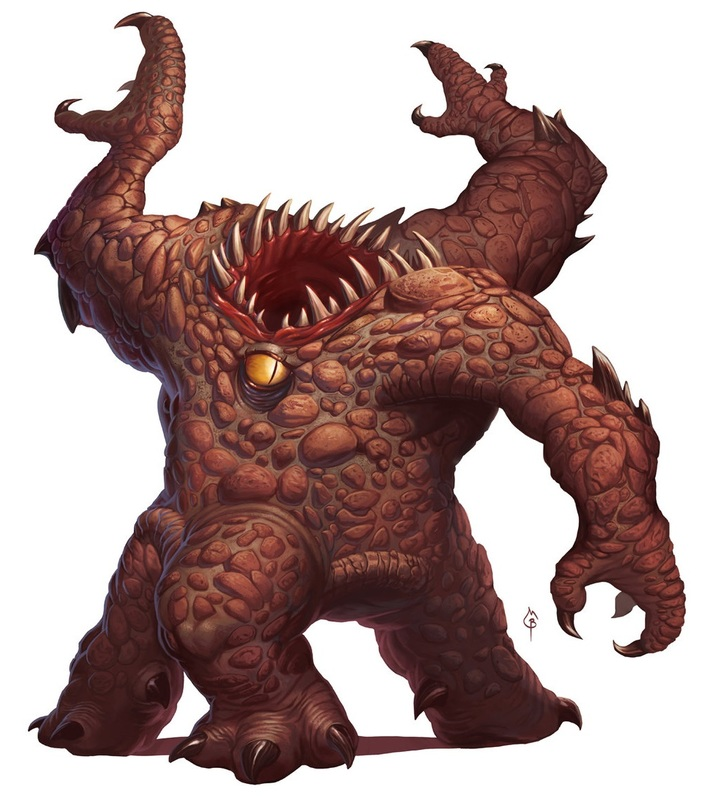

Let our extensive list of a whole three videos provide all the entertainment you will ever need.
A Table of All Our Videos
|  |  | |
| Pick a Padlock using lock picks. This tutorial uses a transparent padlock to show you how to pick a padlock and how a padlock works. Fun skill to master and ideal if you've lost your key! | The sequel to the surprise hit that has everyone saying "yeah sure this one is fine" - it's Honest Trailers for Deadpool 2... | Tristan challenges Nathan, Jacob and Julia to draw monsters from Dungeons and Dragons based on their names and descriptions on this episode of Drawfee. |